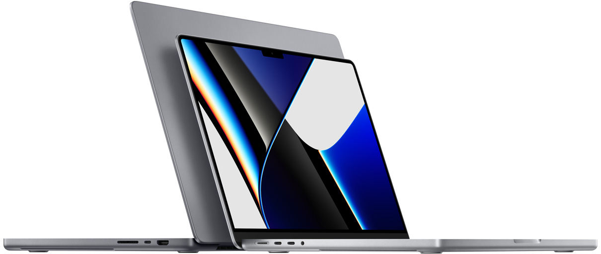

-
تکنولوژی

مدلهای پیشرفته مکبوک پرو M2 و مک مینی احتمالا اواخر امسال روانه بازار میشوند
طبق گفته خبرنگار بلومبرگ، اپل در پایان سال 2022 دستگاههای M2 جدیدی را وارد بازار خواهد کرد.
طرفداران محصولات اپل همچنان منتظر نسخههای جدید مک بوک پرو و مک مینی با چیپ پیشرفته M2 هستند تا قبل از پایان سال 2022 وارد بازار شود و اکنون در گزارش جدیدی، یک بار دیگر به احتمال عرضه این دستگاهها تا پایان سال اشاره شده است.
«مارک گورمن» از بلومبرگ، در خبرنامه «Power On» با بررسی نتایج مالی اخیر اپل ادعا میکند که درآمد کمتر از انتظار رایانههای مک به دلیل عرضه مدلهای جدید مجهز به چیپ M2 بوده است.
افزایش فروش مک بوک در سه ماهه چهارم سال

با این حال، گورمن نسبت به افزایش فروش در سه ماهه چهارم خوشبین است و اعتقاد دارد که یک «افزایش بزرگ» در فروش مکبوک وجود خواهد داشت. گورمن همچنین در ادامه گزارش خود اشاره کرده: «اپل با عرضه مک مینیهای جدید و مکبوکپروهای پیشرفته خود در اواخر امسال، شتاب بیشتری خواهد گرفت و همچنین مک بوک پرو، آیمک و مکبوک ایر 15 اینچی را در سال 2023 عرضه خواهد کرد.»
نظرات جدید گورمن در حالی بیان شده که او چند هفته قبل گفته بود مک بوک پرو با تراشه M2 پرو و مکس احتمالا در فصل پاییز معرفی میشوند.
محصولاتی که تاکنون به چیپ M2 اپل مجهز شدهاند شامل مکبوک پرو 13 اینچی و مکبوک ایر میشود اما دستگاههای دیگری نیز با این تراشه در حال توسعه هستند. هرچند در برخی شایعات گفته شده بود که اپل در پاییز این دستگاهها را معرفی خواهد کرد، اما اکنون با وجود گزارش گورمن، احتمال معرفی آنها در اواخر سال 2022 افزایش پیدا میکند.
در نهایت گورمن در گزارش خود بیش از هر چیز دیگری در مورد آیپد ابزار نگرانی میکند. او توضیح میدهد که بسیاری از مصرفکنندگان موفق نشدهاند تا آیپد موردنظر خود را در طول سال گذشته خریداری کنند. همچنین اپل آیپد ایر و آیپد پرو را تا حد زیادی شبیه به یکدیگر طراحی کرده که این امر میتواند باعث واکنش منفی خریداران شود و همچنین قابلیتهای چند وظیفگی آیپد پرو ضعفهایی دارد.